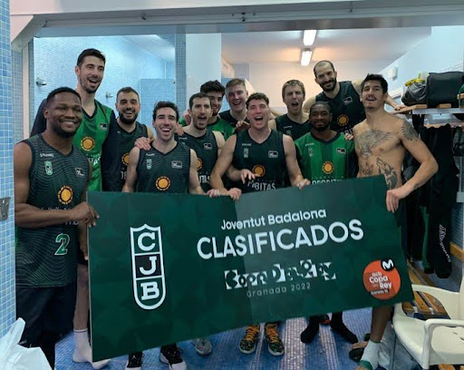

La Penya Spirit of Badalona se fundó el 30 de marzo de 1930 en Badalona y fue partícipe de varios deportes: ciclismo, tenis de mesa, baloncesto y fútbol. Al principio, este último era su principal actividad. Joventut Badalona. El baloncesto se convirtió en su principal actividad en los años 1940, momento en el que se fijaron los característicos colores 🟩⬛ verde y negro.
En 1932, cambió su nombre original por el de Centre Esportiu Badaloní y en 1939 adoptó el actual Club, y es mas la temporada esportiva sigue, la temporada 1966-1967 consiguió el primer título de liga, con un equipo liderado por el pívot Alfonso Martínez, el alero Enric Margall y el base Nino Buscató, y entrenado por Eduard Kucharski ⛹️♂️. Los jugadores Alfonso Martínez y Nino Buscató fueron fundamentales para el éxito del equipo, siendo los máximos anotadores de la competición con 441 y 357 puntos respectivamente. El entrenador Eduard Kucharski lideró al equipo con maestría, guiándolos hacia este logro histórico.

Pulse aquí en el Link. Los primeros años 90 situaron al club en el primer nivel europeo. Se construyó el Pabellón Olímpico de Badalona y la cifra de socios alcanzó los 12 mil por primera vez. La temporada 1990-91 se ganó la liga ACB y se llegó a la final de la Copa de Europa contra el KK Partizan de Belgrado. El KK Partizan se escapó en el último segundo con un triple de Aleksandar Djordjevic. Al año siguiente se ganó de nuevo la liga ACB y en 1994, fue el ‘fantástico’ un equipo conformado por Villacampa, Rafael y Tomàs Jofresa, Corny Thompson, Harold Pressley, y jugadores históricos ganando así la Copa de Europa al vencer al B. C. Oly del Pireo.
